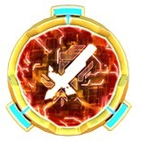
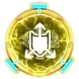
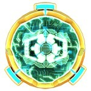

Улучшайте свои здания, оснащая здания этими Силовыми ядрами! (Характеристики указаны для золотых энергетических ядер 1-го уровня).
Важные факты про Ядра Ботов: |
 |
 |
 |
 |
| Энергия | Авторемонт | Тактика | Стенолом | Атака |
| +5% к здоровью бота. | Восстанавливает 0,9% здоровья каждые 5 сек. | Бот сосредотачивается на защитных зданиях и ботах аванпостов в течении 32 сек. после высадки | Урон стенам увеличен на 14%. Действует на обычные атаки, и способности Сладжа и Ноускон. | Увеличивает урон обычных атак на 4%. |
 |
 |
 |
 |
| Бронежилет | Летучая смесь | Импульс смерти | Покрытие тритилиума |
| На 15% уменьшает урон от Мортир и Ракетных Комплексов. | Увеличивает урон особого умения на 5%. | При 0 здоровья произойдет ЭМИ взрыв, отключающий цели на большом участке в течении 3.8 сек. | Уменьшает урон от Авто Пушек, Лазерных Турелей, Энерго Башен и Миниганов на 18%. |
|  |  |
|
| Генератор лучей | Отражающее покрытие | Передовые указы |
| Увеличивает эффект восстановления на 5%. | 32%защита от Лазерных Турелей и Пучковых Лазеров. | Увеличивает урон особого умения на 16%. |
|  |  |
||
| Матрица Оптимуса Прайма | Корона Старскрима | Пистолет Рейзорклоу | Корона Гримлока |
| Устанавливается на: Оптимус Прайм Увеличивает здоровье Оптимуса Прайма на 5.5%. Пока мы не станем едины!. |
Устанавливается на: Старскрим Корона создает щит отражающий 12% урона обратно атакующим! Увеличивает урон особого умения на 16%. |
Устанавливается на: Рейзорклоу Увеличивает урон умения Рейзорклоу на 5% и скорость передвежения на 5%. |
Устанавливается на: Гримлок Увеличивает урон умения Гримлока на 5% и скорость передвежения на 5%. |
 |
 |
 |
|
| Хром Джетфайра | Закаленный в боях Мегатрон | Меч Мотормастера | Матрица Родимуса Прайма |
| Устанавливается на: Джетфайр Хромовое покрытие отражает 7% урона обратно атакующим! Увеличивает урон особого умения на 16%. |
Устанавливается на: Мегатрон Увеличивает здоровье Мегатрона на 5.5%. |
Устанавливается на: Мотормастер На 10% уменьшает урон от Энерго Башен, Пучковых Лазеров и Автопушек |
Устанавливается на: Родимус Прайм На 10% уменьшает урон от Энерго Башен, Пучковых Лазеров и Автопушек. |
 |
 |
 |
|
| Броня Элиты-1 | Булава Лагната | Оптимус Трансметал | Мегатрон Трансметал |
| Устанавливается на: Элита-1 Когда твоё здоровье падает ниже 30%, ты становишся невосприимчивым к вх. урону и эффектам оглушения в течение 5.7 сек. |
Устанавливается на: Лагнат Когда твоё здоровье падает ниже 30%, ты становишся невосприимчивым к вх. урону и эффектам оглушения в течение 5.7 сек. |
Устанавливается на: Оптимус Праймал Восстанавливает 1% здоровья каждые 5 сек.. Всякий раз, когда Оптимус Праймал прыгает, чтобы напасть, он получает щит, который отражает 24% от вх. урона обратно атакующим в течении 6 сек. |
Устанавливается на: Мегатрон Трекс (ВЗ) Восстанавливает 1% здоровья каждые 5 сек.. Всякий раз, когда Мегатрон Трекс (ВЗ) прыгает, чтобы напасть, он получает щит, который отражает 24% от вх. урона обратно атакующим в течении 6 сек. |
 |
 |
 |
 |
| Ринокс Трансметал | Читор Трансметал | Тарантул Трансметал | Блэкарахния Трансметал |
| Устанавливается на: Ринокс Восстанавливает 1% здоровья каждые 5 сек.. Когда твоё здоровье падает ниже 40%, ты ловишь ближайших врагов в крадущие здоровья лианы на 6 сек. |
Устанавливается на: Читор При нахождении в этом режиме урон по стенам увелчивается 20%. Когда твоё здоровье падает ниже 30%, ты становишься невосприимчивым к вх. урону и эффектам оглушения в течении 3.2 сек. |
Устанавливается на: Тарантул Восстанавливает 1% здоровья каждые 5 сек.. Когда твоё здоровье падает ниже 40%, ты ловишь ближайших врагов в крадущие здоровья лианы на 6 сек. |
Устанавливается на: Блэкарахния При нахождении в этом режиме урон по стенам увелчивается 20%. Когда твоё здоровье падает ниже 30%, ты становишься невосприимчивым к вх. урону и эффектам оглушения в течении 3.2 сек. |